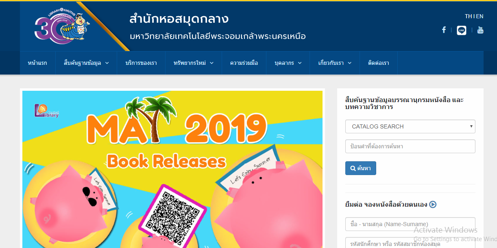

<!--
  Generated template for the LibraryPage page.

  See http://ionicframework.com/docs/components/#navigation for more info on
  Ionic pages and navigation.
-->
<ion-header>

  

</ion-header>


<ion-content padding>
  <ion-card>

    <ion-card-header style="background-color:#dcdddc;">
      <h2 text-center><b>Library of Kmutnb</b></h2>

    </ion-card-header>
    <ion-card>
      
    </ion-card>
    <ion-card-content>
      <b>สำนักหอสมุดกลาง</b><br>
      1518 อาคาร นวมินทร์ ถ.ประชาราษฎร์ 1 แขวงวงศ์สว่าง เขตบางซื่อ กรุงเทพฯ 10800<br>
      Tel. : 0-2555-2000 ต่อ 2147<br>
      e-mail : info@lib.kmutnb.ac.th<br>
      <a href="#"
        onclick="window.open('https://www.facebook.com/Central.Library.Kmutnb/', '_system', 'location=yes');">Facebook</a><br>
      <a href="#" onclick="window.open('http://library.kmutnb.ac.th/th/', '_system', 'location=yes');">Website</a><br>
      <a href="#"
        onclick="window.open('http://library.kmutnb.ac.th/checkroom/index01.html', '_system', 'location=yes');">จองห้องออนไลน์</a><br>
      <a href="#"
        onclick="window.open('https://injan.kmutnb.ac.th/patroninfo', '_system', 'location=yes');">ยืม/จองหนังสือ</a><br>
    </ion-card-content>
  </ion-card>
</ion-content>